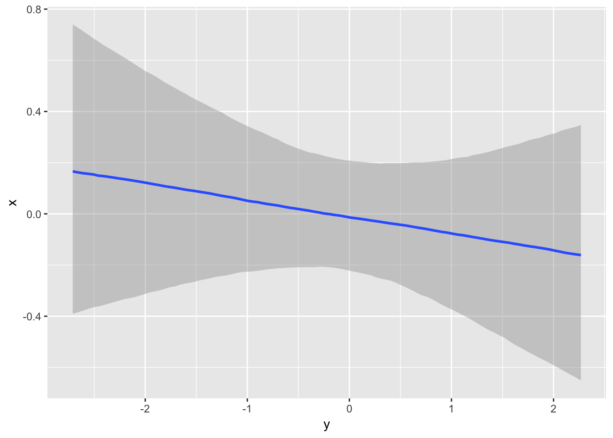

Future package
Vignettes in package ‘future’:
Use R directly on the server (no scheduler)
This approach works for a server that is SSH-accessible and has R and the future package installed. To be able to SSH in without storing your password in plaintext somewhere, you’ll need to set up public key authentification. You do this by copying your public key to ~/.ssh/authorized_keys on the server. If you’ve already generated a public key on your local machine, it should be in ~/.ssh/id_rsa.pub or something similar. If you haven’t yet, Google how :-) You’ll have to do this for every server you want to use.
You can automatically do this using (source:
library("future") # this is the package we use to flexibly scale our processing
library("listenv") # this is a helper package that allows us to assign the results to a list even if they come in at different times
## Set up access to remote login node
login <- tweak(remote, workers = "arslan@tardis.mpib-berlin.mpg.de") # Your username goes before the @
plan(login) # this tells the future package that we want to use a remote server for running our future operations
# but maybe the reason we want to shift to a server is not that we want to run a simple sequential operation there.
# maybe we want to take advantage of parallelisation and run the operation in parallel on multiple cores
## Specify future topology
## login node -> { cluster nodes } -> { multiple cores }
plan(list(
login,
multicore,
sequential
))
# demo("mandelbrot", package = "future", ask = FALSE)
## (a) This will be evaluated on the cluster login computer
x %<-% { # this operator binds the result of the promise/future to x
thost <- Sys.info()[["nodename"]]
tpid <- Sys.getpid()
y <- listenv()
for (task in 1:4) {
## (b) This will be evaluated on a different core
y[[task]] %<-% {
mhost <- Sys.info()[["nodename"]]
mpid <- Sys.getpid()
z <- listenv()
for (jj in 1:2) {
## (c) this will be evaluated sequentially on the same core
z[[jj]] %<-% data.frame(task = task,
top.host = thost, top.pid = tpid,
mid.host = mhost, mid.pid = mpid,
host = Sys.info()[["nodename"]],
pid = Sys.getpid())
}
Reduce(rbind, z)
}
}
Reduce(rbind, y)
}
x
TARDIS cluster
Of course if you want to do something more major on the cluster, you need to use the Torque job scheduler. For this, you need a second package future.batchtools. Further, you need to copy a template file for job scripts to the server.
library("future")
library("listenv")
library("future.batchtools")
library(debugme)
Sys.setenv(DEBUGME='batchtools')
library(batchtools)
## Set up access to remote login node
login <- tweak(remote, workers = "arslan@tardis.mpib-berlin.mpg.de")
qsub <- tweak(batchtools_torque, template = 'torque-lido.tmpl',
# workers = "export LSF_ENVDIR=/opt/lsf/conf",
resources = list(job.name = 'test1',
queue = 'default',
walltime = "0:1:0", # 1 minute runtime
memory = 1,
processes = 4))
# we take our local template and write it to the server
plan(login)
tmpl = readLines("torque-lido.tmpl")
value(future({ cat(tmpl, file = "torque-lido.tmpl", sep = "\n") }))
## NULL
## [1] TRUE
## Specify future topology
## login node -> { cluster nodes } -> { multiple cores }
plan(list(
login,
qsub,
multicore
))
x %<-% {
thost <- Sys.info()[["nodename"]]
tpid <- Sys.getpid()
# transfer my local tmpl file
y <- listenv()
for (task in 1:4) {
## (b) This will be evaluated on a compute node on the cluster
y[[task]] %<-% {
mhost <- Sys.info()[["nodename"]]
mpid <- Sys.getpid()
z <- listenv()
for (jj in 1:2) {
## (c) These will be evaluated in separate processes on the same compute node
z[[jj]] %<-% data.frame(task = task,
top.host = thost, top.pid = tpid,
mid.host = mhost, mid.pid = mpid,
host = Sys.info()[["nodename"]],
pid = Sys.getpid())
}
Reduce(rbind, z)
}
}
Reduce(rbind, y)
}
x
brms
brms is a Bayesian regression modelling software. Because we often run multiple chains in brms to assess convergence and obtain samples, more quickly, parallelisation is beneficial. brms has internal support for futures. By setting its future argument to true, it will run the chains according to plan. Because running such a model can take a lot of time, it is beneficial to offload it to a remote server or cluster.
use brms on Tardis
## Set up access to remote login node
# login_vpn <- tweak(remote, workers = "rarslan@login.gwdg.de") # doesn't work because R not installed
login <- tweak(remote, workers = "arslan@tardis.mpib-berlin.mpg.de")
qsub <- tweak(batchtools_torque, template = 'torque-lido.tmpl',
# workers = "export LSF_ENVDIR=/opt/lsf/conf",
resources = list(job.name = 'test1',
queue = 'default',
walltime = "1:0:0", # 1 hour runtime
memory = 4,
processes = 4))
library(brms)
## Specify future topology
## login node -> { cluster node (compile brms model) } -> { run chains on multiple cores }
plan(list(
login,
qsub,
multicore
))
mydata = data.frame(x = rnorm(100), y = rnorm(100))
model_name <- "mydata_model.rds"
fit2 %<-% { # retrieve the model if it has been fit already
if (file.exists(model_name))
readRDS(model_name)
}
if (is.null(fit2)) {
fit2 %<-% { # login to tardis
model %<-% { # qsub
message(model_name)
brm(x ~ y,
data = mydata,
chains = 4,
future = TRUE #multicore
)
}
saveRDS(model, file = model_name) # in case we lose the connection, save the result
model
}
}
# but the program will wait for it
fit2
## Family: gaussian
## Links: mu = identity; sigma = identity
## Formula: x ~ y
## Data: mydata (Number of observations: 100)
## Samples: 4 chains, each with iter = 2000; warmup = 1000; thin = 1;
## total post-warmup samples = 4000
## ICs: LOO = NA; WAIC = NA; R2 = NA
##
## Population-Level Effects:
## Estimate Est.Error l-95% CI u-95% CI Eff.Sample Rhat
## Intercept -0.01 0.11 -0.22 0.21 4000 1.00
## y -0.07 0.10 -0.27 0.13 3842 1.00
##
## Family Specific Parameters:
## Estimate Est.Error l-95% CI u-95% CI Eff.Sample Rhat
## sigma 1.04 0.08 0.91 1.19 3633 1.00
##
## Samples were drawn using sampling(NUTS). For each parameter, Eff.Sample
## is a crude measure of effective sample size, and Rhat is the potential
## scale reduction factor on split chains (at convergence, Rhat = 1).

You can track progress for your job here: https://tardis.mpib-berlin.mpg.de/jobs/
(find your name, click the job)
LS0tCnRpdGxlOiAidHJ5IgphdXRob3I6ICJSdWJlbiBBcnNsYW4iCmRhdGU6ICIzMCBPY3RvYmVyIDIwMTciCm91dHB1dDogCiAgaHRtbF9kb2N1bWVudDoKICAgIGRmX3ByaW50OiBwYWdlZAotLS0KCmBgYHtyIHNldHVwLCBpbmNsdWRlPUZBTFNFfQprbml0cjo6b3B0c19jaHVuayRzZXQoZWNobyA9IFRSVUUpCmBgYAoKIyMgRnV0dXJlIHBhY2thZ2UKVmlnbmV0dGVzIGluIHBhY2thZ2Ug4oCYZnV0dXJl4oCZOgoKYGBge3IgbG9hZH0KIyB2aWduZXR0ZSgiZnV0dXJlLTEtb3ZlcnZpZXciKQpsaWJyYXJ5KGZ1dHVyZSkKYGBgCgojIyBVc2UgUiBkaXJlY3RseSBvbiB0aGUgc2VydmVyIChubyBzY2hlZHVsZXIpCgpUaGlzIGFwcHJvYWNoIHdvcmtzIGZvciBhIHNlcnZlciB0aGF0IGlzIFNTSC1hY2Nlc3NpYmxlIGFuZCBoYXMgUiBhbmQgdGhlIF9fZnV0dXJlX18gcGFja2FnZSBpbnN0YWxsZWQuIFRvIGJlIGFibGUgdG8gU1NIIGluIHdpdGhvdXQgc3RvcmluZyB5b3VyIHBhc3N3b3JkIGluIHBsYWludGV4dCBzb21ld2hlcmUsIHlvdSdsbCBuZWVkIHRvIHNldCB1cCBwdWJsaWMga2V5IGF1dGhlbnRpZmljYXRpb24uIFlvdSBkbyB0aGlzIGJ5IGNvcHlpbmcgeW91ciBwdWJsaWMga2V5IHRvIGB+Ly5zc2gvYXV0aG9yaXplZF9rZXlzYCBvbiB0aGUgc2VydmVyLiBJZiB5b3UndmUgYWxyZWFkeSBnZW5lcmF0ZWQgYSBwdWJsaWMga2V5IG9uIHlvdXIgbG9jYWwgbWFjaGluZSwgaXQgc2hvdWxkIGJlIGluIGB+Ly5zc2gvaWRfcnNhLnB1YmAgb3Igc29tZXRoaW5nIHNpbWlsYXIuIElmIHlvdSBoYXZlbid0IHlldCwgR29vZ2xlIGhvdyA6LSkKWW91J2xsIGhhdmUgdG8gZG8gdGhpcyBmb3IgZXZlcnkgc2VydmVyIHlvdSB3YW50IHRvIHVzZS4KCllvdSBjYW4gYXV0b21hdGljYWxseSBkbyB0aGlzIHVzaW5nIChbc291cmNlXShodHRwczovL2Fza3VidW50dS5jb20vcXVlc3Rpb25zLzQ4MzAvZWFzaWVzdC13YXktdG8tY29weS1zc2gta2V5cy10by1hbm90aGVyLW1hY2hpbmUpOgoKYGBgYmFzaApzc2gtY29weS1pZCB1c2VyQHRhcmRpcy5tcGliLWJlcmxpbi5tcGcuZGUKYGBgCgoKCmBgYHtyfQpsaWJyYXJ5KCJmdXR1cmUiKSAjIHRoaXMgaXMgdGhlIHBhY2thZ2Ugd2UgdXNlIHRvIGZsZXhpYmx5IHNjYWxlIG91ciBwcm9jZXNzaW5nCmxpYnJhcnkoImxpc3RlbnYiKSAjIHRoaXMgaXMgYSBoZWxwZXIgcGFja2FnZSB0aGF0IGFsbG93cyB1cyB0byBhc3NpZ24gdGhlIHJlc3VsdHMgdG8gYSBsaXN0IGV2ZW4gaWYgdGhleSBjb21lIGluIGF0IGRpZmZlcmVudCB0aW1lcwoKIyMgU2V0IHVwIGFjY2VzcyB0byByZW1vdGUgbG9naW4gbm9kZQpsb2dpbiA8LSB0d2VhayhyZW1vdGUsIHdvcmtlcnMgPSAiYXJzbGFuQHRhcmRpcy5tcGliLWJlcmxpbi5tcGcuZGUiKSAjIFlvdXIgdXNlcm5hbWUgZ29lcyBiZWZvcmUgdGhlIEAKcGxhbihsb2dpbikgIyB0aGlzIHRlbGxzIHRoZSBmdXR1cmUgcGFja2FnZSB0aGF0IHdlIHdhbnQgdG8gdXNlIGEgcmVtb3RlIHNlcnZlciBmb3IgcnVubmluZyBvdXIgZnV0dXJlIG9wZXJhdGlvbnMKCiMgYnV0IG1heWJlIHRoZSByZWFzb24gd2Ugd2FudCB0byBzaGlmdCB0byBhIHNlcnZlciBpcyBub3QgdGhhdCB3ZSB3YW50IHRvIHJ1biBhIHNpbXBsZSBzZXF1ZW50aWFsIG9wZXJhdGlvbiB0aGVyZS4KIyBtYXliZSB3ZSB3YW50IHRvIHRha2UgYWR2YW50YWdlIG9mIHBhcmFsbGVsaXNhdGlvbiBhbmQgcnVuIHRoZSBvcGVyYXRpb24gaW4gcGFyYWxsZWwgb24gbXVsdGlwbGUgY29yZXMKIyMgU3BlY2lmeSBmdXR1cmUgdG9wb2xvZ3kKIyMgbG9naW4gbm9kZSAtPiB7IGNsdXN0ZXIgbm9kZXMgfSAtPiB7IG11bHRpcGxlIGNvcmVzIH0KcGxhbihsaXN0KAogIGxvZ2luLAogIG11bHRpY29yZSwKICBzZXF1ZW50aWFsCikpCiMgZGVtbygibWFuZGVsYnJvdCIsIHBhY2thZ2UgPSAiZnV0dXJlIiwgYXNrID0gRkFMU0UpCgoKIyMgKGEpIFRoaXMgd2lsbCBiZSBldmFsdWF0ZWQgb24gdGhlIGNsdXN0ZXIgbG9naW4gY29tcHV0ZXIKeCAlPC0lIHsgIyB0aGlzIG9wZXJhdG9yIGJpbmRzIHRoZSByZXN1bHQgb2YgdGhlIHByb21pc2UvZnV0dXJlIHRvIHgKICB0aG9zdCA8LSBTeXMuaW5mbygpW1sibm9kZW5hbWUiXV0KICB0cGlkIDwtIFN5cy5nZXRwaWQoKQogIHkgPC0gbGlzdGVudigpCiAgZm9yICh0YXNrIGluIDE6NCkgewogICAgIyMgKGIpIFRoaXMgd2lsbCBiZSBldmFsdWF0ZWQgb24gYSBkaWZmZXJlbnQgY29yZQogICAgeVtbdGFza11dICU8LSUgewogICAgICBtaG9zdCA8LSBTeXMuaW5mbygpW1sibm9kZW5hbWUiXV0KICAgICAgbXBpZCA8LSBTeXMuZ2V0cGlkKCkKICAgICAgeiA8LSBsaXN0ZW52KCkKICAgICAgZm9yIChqaiBpbiAxOjIpIHsKICAgICAgICAjIyAoYykgdGhpcyB3aWxsIGJlIGV2YWx1YXRlZCBzZXF1ZW50aWFsbHkgb24gdGhlIHNhbWUgY29yZQogICAgICAgIHpbW2pqXV0gJTwtJSBkYXRhLmZyYW1lKHRhc2sgPSB0YXNrLAogICAgICAgICAgICAgICAgICAgICAgICAgICAgICAgIHRvcC5ob3N0ID0gdGhvc3QsIHRvcC5waWQgPSB0cGlkLAogICAgICAgICAgICAgICAgICAgICAgICAgICAgICAgIG1pZC5ob3N0ID0gbWhvc3QsIG1pZC5waWQgPSBtcGlkLAogICAgICAgICAgICAgICAgICAgICAgICAgICAgICAgIGhvc3QgPSBTeXMuaW5mbygpW1sibm9kZW5hbWUiXV0sCiAgICAgICAgICAgICAgICAgICAgICAgICAgICAgICAgcGlkID0gU3lzLmdldHBpZCgpKQogICAgICB9CiAgICAgIFJlZHVjZShyYmluZCwgeikKICAgIH0KICB9CiAgUmVkdWNlKHJiaW5kLCB5KQp9Cgp4CmBgYAoKCiMjIFRBUkRJUyBjbHVzdGVyCk9mIGNvdXJzZSBpZiB5b3Ugd2FudCB0byBkbyBzb21ldGhpbmcgbW9yZSBtYWpvciBvbiB0aGUgY2x1c3RlciwgeW91IG5lZWQgdG8gdXNlIHRoZSBUb3JxdWUgam9iIHNjaGVkdWxlci4KRm9yIHRoaXMsIHlvdSBuZWVkIGEgc2Vjb25kIHBhY2thZ2UgYGZ1dHVyZS5iYXRjaHRvb2xzYC4gRnVydGhlciwgeW91IG5lZWQgdG8gY29weSBhIHRlbXBsYXRlIGZpbGUgZm9yIGpvYiBzY3JpcHRzIHRvIHRoZSBzZXJ2ZXIuCgpgYGB7cn0KbGlicmFyeSgiZnV0dXJlIikKbGlicmFyeSgibGlzdGVudiIpCmxpYnJhcnkoImZ1dHVyZS5iYXRjaHRvb2xzIikKbGlicmFyeShkZWJ1Z21lKQpTeXMuc2V0ZW52KERFQlVHTUU9J2JhdGNodG9vbHMnKQpsaWJyYXJ5KGJhdGNodG9vbHMpCgojIyBTZXQgdXAgYWNjZXNzIHRvIHJlbW90ZSBsb2dpbiBub2RlCmxvZ2luIDwtIHR3ZWFrKHJlbW90ZSwgd29ya2VycyA9ICJhcnNsYW5AdGFyZGlzLm1waWItYmVybGluLm1wZy5kZSIpCnFzdWIgPC0gdHdlYWsoYmF0Y2h0b29sc190b3JxdWUsIHRlbXBsYXRlID0gJ3RvcnF1ZS1saWRvLnRtcGwnLCAKICAgICAgICAgICAgIyB3b3JrZXJzID0gImV4cG9ydCBMU0ZfRU5WRElSPS9vcHQvbHNmL2NvbmYiLAogICAgICAgICAgICAgICAgcmVzb3VyY2VzID0gbGlzdChqb2IubmFtZSA9ICd0ZXN0MScsCiAgICAgICAgICAgICAgICAgICAgICAgICAgICAgICAgcXVldWUgPSAnZGVmYXVsdCcsCiAgICAgICAgICAgICAgICAgICAgICAgICAgICAgICAgd2FsbHRpbWUgPSAiMDoxOjAiLCAjIDEgbWludXRlIHJ1bnRpbWUKICAgICAgICAgICAgICAgICAgICAgICAgICAgICAgICBtZW1vcnkgPSAxLAogICAgICAgICAgICAgICAgICAgICAgICAgICAgICAgIHByb2Nlc3NlcyA9IDQpKQoKCiMgd2UgdGFrZSBvdXIgbG9jYWwgdGVtcGxhdGUgYW5kIHdyaXRlIGl0IHRvIHRoZSBzZXJ2ZXIKcGxhbihsb2dpbikKdG1wbCA9IHJlYWRMaW5lcygidG9ycXVlLWxpZG8udG1wbCIpCnZhbHVlKGZ1dHVyZSh7ICAgY2F0KHRtcGwsIGZpbGUgPSAidG9ycXVlLWxpZG8udG1wbCIsIHNlcCA9ICJcbiIpIH0pKQphbGwuZXF1YWwodG1wbCwgdmFsdWUoZnV0dXJlKHsgICByZWFkTGluZXMoInRvcnF1ZS1saWRvLnRtcGwiKSB9KSkpCgoKIyMgU3BlY2lmeSBmdXR1cmUgdG9wb2xvZ3kKIyMgbG9naW4gbm9kZSAtPiB7IGNsdXN0ZXIgbm9kZXMgfSAtPiB7IG11bHRpcGxlIGNvcmVzIH0KcGxhbihsaXN0KAogIGxvZ2luLAogIHFzdWIsCiAgbXVsdGljb3JlCikpCgoKCnggJTwtJSB7CiAgdGhvc3QgPC0gU3lzLmluZm8oKVtbIm5vZGVuYW1lIl1dCiAgdHBpZCA8LSBTeXMuZ2V0cGlkKCkKICAjIHRyYW5zZmVyIG15IGxvY2FsIHRtcGwgZmlsZQogIHkgPC0gbGlzdGVudigpCiAgZm9yICh0YXNrIGluIDE6NCkgewogICAgIyMgKGIpIFRoaXMgd2lsbCBiZSBldmFsdWF0ZWQgb24gYSBjb21wdXRlIG5vZGUgb24gdGhlIGNsdXN0ZXIKICAgIHlbW3Rhc2tdXSAlPC0lIHsKICAgICAgbWhvc3QgPC0gU3lzLmluZm8oKVtbIm5vZGVuYW1lIl1dCiAgICAgIG1waWQgPC0gU3lzLmdldHBpZCgpCiAgICAgIHogPC0gbGlzdGVudigpCiAgICAgIGZvciAoamogaW4gMToyKSB7CiAgICAgICAgIyMgKGMpIFRoZXNlIHdpbGwgYmUgZXZhbHVhdGVkIGluIHNlcGFyYXRlIHByb2Nlc3NlcyBvbiB0aGUgc2FtZSBjb21wdXRlIG5vZGUKICAgICAgICB6W1tqal1dICU8LSUgZGF0YS5mcmFtZSh0YXNrID0gdGFzaywKICAgICAgICAgICAgICAgICAgICAgICAgICAgICAgICB0b3AuaG9zdCA9IHRob3N0LCB0b3AucGlkID0gdHBpZCwKICAgICAgICAgICAgICAgICAgICAgICAgICAgICAgICBtaWQuaG9zdCA9IG1ob3N0LCBtaWQucGlkID0gbXBpZCwKICAgICAgICAgICAgICAgICAgICAgICAgICAgICAgICBob3N0ID0gU3lzLmluZm8oKVtbIm5vZGVuYW1lIl1dLAogICAgICAgICAgICAgICAgICAgICAgICAgICAgICAgIHBpZCA9IFN5cy5nZXRwaWQoKSkKICAgICAgfQogICAgICBSZWR1Y2UocmJpbmQsIHopCiAgICB9CiAgfQogIFJlZHVjZShyYmluZCwgeSkKfQoKeApgYGAKCiMjIGJybXMKYnJtcyBpcyBhIEJheWVzaWFuIHJlZ3Jlc3Npb24gbW9kZWxsaW5nIHNvZnR3YXJlLiBCZWNhdXNlIHdlIG9mdGVuIHJ1biBtdWx0aXBsZSBjaGFpbnMgaW4gYnJtcyB0byBhc3Nlc3MgY29udmVyZ2VuY2UgYW5kIG9idGFpbiBzYW1wbGVzLCBtb3JlIHF1aWNrbHksIHBhcmFsbGVsaXNhdGlvbiBpcyBiZW5lZmljaWFsLiBicm1zIGhhcyBpbnRlcm5hbCBzdXBwb3J0IGZvciBmdXR1cmVzLiBCeSBzZXR0aW5nIGl0cyBgZnV0dXJlYCBhcmd1bWVudCB0byB0cnVlLCBpdCB3aWxsIHJ1biB0aGUgY2hhaW5zIGFjY29yZGluZyB0byBgcGxhbmAuCkJlY2F1c2UgcnVubmluZyBzdWNoIGEgbW9kZWwgY2FuIHRha2UgYSBsb3Qgb2YgdGltZSwgaXQgaXMgYmVuZWZpY2lhbCB0byBvZmZsb2FkIGl0IHRvIGEgcmVtb3RlIHNlcnZlciBvciBjbHVzdGVyLgoKIyMgdXNlIGJybXMgb24gVGFyZGlzCgpgYGB7cn0KCiMjIFNldCB1cCBhY2Nlc3MgdG8gcmVtb3RlIGxvZ2luIG5vZGUKIyBsb2dpbl92cG4gPC0gdHdlYWsocmVtb3RlLCB3b3JrZXJzID0gInJhcnNsYW5AbG9naW4uZ3dkZy5kZSIpICMgZG9lc24ndCB3b3JrIGJlY2F1c2UgUiBub3QgaW5zdGFsbGVkCmxvZ2luIDwtIHR3ZWFrKHJlbW90ZSwgd29ya2VycyA9ICJhcnNsYW5AdGFyZGlzLm1waWItYmVybGluLm1wZy5kZSIpCnFzdWIgPC0gdHdlYWsoYmF0Y2h0b29sc190b3JxdWUsIHRlbXBsYXRlID0gJ3RvcnF1ZS1saWRvLnRtcGwnLCAKICAgICAgICAgICAgIyB3b3JrZXJzID0gImV4cG9ydCBMU0ZfRU5WRElSPS9vcHQvbHNmL2NvbmYiLAogICAgICAgICAgICAgICAgcmVzb3VyY2VzID0gbGlzdChqb2IubmFtZSA9ICd0ZXN0MScsCiAgICAgICAgICAgICAgICAgICAgICAgICAgICAgICAgcXVldWUgPSAnZGVmYXVsdCcsCiAgICAgICAgICAgICAgICAgICAgICAgICAgICAgICAgd2FsbHRpbWUgPSAiMTowOjAiLCAjIDEgaG91ciBydW50aW1lCiAgICAgICAgICAgICAgICAgICAgICAgICAgICAgICAgbWVtb3J5ID0gNCwKICAgICAgICAgICAgICAgICAgICAgICAgICAgICAgICBwcm9jZXNzZXMgPSA0KSkKCmxpYnJhcnkoYnJtcykKCiMjIFNwZWNpZnkgZnV0dXJlIHRvcG9sb2d5CiMjIGxvZ2luIG5vZGUgLT4geyBjbHVzdGVyIG5vZGUgKGNvbXBpbGUgYnJtcyBtb2RlbCkgfSAtPiB7IHJ1biBjaGFpbnMgb24gbXVsdGlwbGUgY29yZXMgfQpwbGFuKGxpc3QoCiAgbG9naW4sCiAgcXN1YiwKICBtdWx0aWNvcmUKKSkKCm15ZGF0YSA9IGRhdGEuZnJhbWUoeCA9IHJub3JtKDEwMCksIHkgPSBybm9ybSgxMDApKQoKbW9kZWxfbmFtZSA8LSAibXlkYXRhX21vZGVsLnJkcyIKZml0MiAlPC0lIHsgIyByZXRyaWV2ZSB0aGUgbW9kZWwgaWYgaXQgaGFzIGJlZW4gZml0IGFscmVhZHkKICBpZiAoZmlsZS5leGlzdHMobW9kZWxfbmFtZSkpCiAgICByZWFkUkRTKG1vZGVsX25hbWUpCn0KaWYgKGlzLm51bGwoZml0MikpIHsKICBmaXQyICU8LSUgeyAjIGxvZ2luIHRvIHRhcmRpcwogICAgbW9kZWwgJTwtJSB7ICMgcXN1YgogICAgICBtZXNzYWdlKG1vZGVsX25hbWUpCiAgICAgIGJybSh4IH4geSwgCiAgICAgICAgZGF0YSA9IG15ZGF0YSwgCiAgICAgICAgY2hhaW5zID0gNCwKICAgICAgICBmdXR1cmUgPSBUUlVFICNtdWx0aWNvcmUKICAgICAgICApCiAgICB9CiAgICBzYXZlUkRTKG1vZGVsLCBmaWxlID0gbW9kZWxfbmFtZSkgIyBpbiBjYXNlIHdlIGxvc2UgdGhlIGNvbm5lY3Rpb24sIHNhdmUgdGhlIHJlc3VsdAogICAgbW9kZWwKICB9Cn0KCiMgYnV0IHRoZSBwcm9ncmFtIHdpbGwgd2FpdCBmb3IgaXQKZml0MgoKIyBkb24ndCBtYWtlIHlvdXIgcGxvdHMgb24gdGhlIGNsdXN0ZXIsIG1ha2UgZW0gYXQgaG9tZQptYXJnaW5hbF9lZmZlY3RzKGZpdDIpCmBgYAoKCllvdSBjYW4gdHJhY2sgcHJvZ3Jlc3MgZm9yIHlvdXIgam9iIGhlcmU6Cmh0dHBzOi8vdGFyZGlzLm1waWItYmVybGluLm1wZy5kZS9qb2JzLwoKKGZpbmQgeW91ciBuYW1lLCBjbGljayB0aGUgam9iKQo=